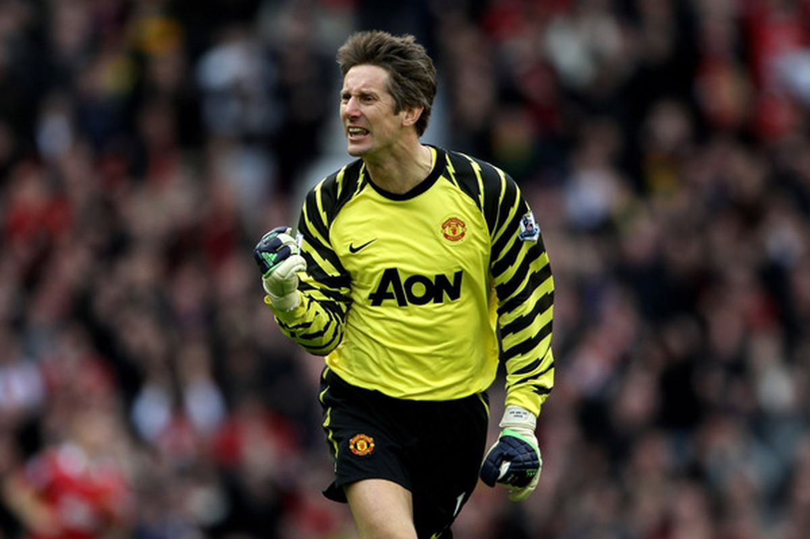

MANCHESTER UNITED
DENNIS RODMAN
Edwin van der Sar - holenderski piłkarz, grający na pozycji bramkarza. W Eredivisie zadebiutował 23 kwietnia 1991 roku w wygranym 1:0 meczu ze Spartą Rotterdam. Dwa lata później stał się już podstawowym zawodnikiem klubu. Van der Sar bronił przez 5 pełnych sezonów w Ajaksie, zdobywając Puchar Mistrzów w 1995 roku i Puchar Interkontynentalny oraz Superpuchar Europy w tym samym roku, ). W 1999 roku zgłosił się po niego Juventus F.C. i Van der Sar powędrował do Serie A. Po 2 sezonach gry w 2001 roku Holender podpisał kontrakt z angielskim Fulham. Jego gra w tej drużynie w sezonie 2004/2005 zaowocowała transferem do Manchesteru United. 12 grudnia 2008 holenderski bramkarz podpisał ze swoim klubem nowy kontrakt na kolejne 2 lata.
28 maja 2011 po meczu finałowym Ligi Mistrzów UEFA z FC Barcelona przegranym przez Manchester United 1:3 zakończył karierę piłkarską
